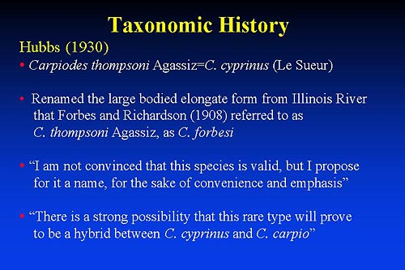

|

- Carpiodes thompsoni Agassiz = C. cyprinus (Le Sueur)
- Large bodied elongate form from Illinois River, Forbes and Richardson (1908) referred to as C. thompsoni Agassiz and renamed it C. forbesi
- "I am not convinced that this species is valid, but I propose for it a name, for the sake of convenience and emphasis"
- "There is a strong possibility that this rare type will prove to be a hybrid between C. cyprinus and C. carpio"
Prev Slide | Next Slide
|

Summary
Introduction
Carpiodes
Ictiobus
Distribution
Field Work
External Morphology
Morphometrics
Allozymes & Isozymes
mtDNA Sequencing
Literature Cited
Publications & Presentations
|